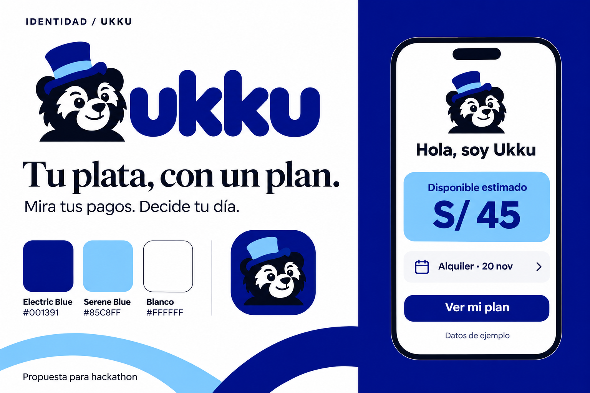

UKKU · REBRANDING V2 · DIRECCIÓN VISUAL BBVA · 14 NOV 2026
Tu plata,
con un plan.
La propuesta conserva el nombre Ukku y al oso de anteojos como cara de la aplicación. Adopta los azules y principios de cercanía de la identidad BBVA, por solicitud del equipo, para su proyecto de hackathon. Es una propuesta del equipo; no acredita un producto oficial del banco.
Qué cambia y por qué
La referencia «Ponle forma» aporta el criterio de desarrollar una personalidad completa y consistente entre logo, mascota, aplicaciones y voz. Aquí ese principio se traduce a un universo azul: mayor claridad de jerarquía, espacio en blanco y un personaje que guía. Se conserva la v1 en su carpeta original.
La identidad de BBVA presentada en 2025 busca una expresión más cercana y comprensible. BBVA Creative documenta su nueva tipografía, sus iconos sencillos, microilustraciones y tono humano. Esta adaptación toma esos principios y la paleta documentada; las decisiones particulares de Ukku se describen como propuestas.
Paleta base
Electric Blue
#001391Logo, sombrero, títulos, enlaces y acción principal. Color confirmado en la publicación de BBVA.
Serene Blue
#85C8FFCinta del sombrero, fondos de acompañamiento y explicaciones. HEX confirmado en la guía de diseño de BBVA.
Blanco
#FFFFFFTarjetas, manchas del oso y texto sobre Electric Blue.
Tokens de apoyo propuestos para Ukku: tinta azul muy oscura #000519, superficie clara #F4F8FF y texto secundario #506078. Estos valores de apoyo son decisiones de implementación de esta propuesta; no se presentan como valores verificados del manual oficial.
Uso sugerido por pantalla: grandes áreas blancas o claras, estructura en azul eléctrico y celeste como apoyo. Los botones principales llevan texto blanco sobre Electric Blue; las tarjetas celestes llevan texto Electric Blue. No usar blanco sobre celeste para texto de lectura.
El oso Ukku
Oso de anteojos original con rostro amable, orejas redondas y manchas claras de pelaje alrededor de los ojos. Sombrero de copa Electric Blue con cinta Serene Blue; pelaje estilizado azul muy oscuro. La inspiración de McPato queda en el guiño del sombrero y el ingenio del personaje.
- El personaje explica y acompaña: mira el dato, señala un pago o ayuda a entender una carga.
- El rostro no cambia según el saldo. Evitar culpa, regaños o festejos que animen a gastar.
- Conservar las manchas, la silueta del sombrero y la sonrisa al desarrollar nuevas poses.
- Los recursos recurrentes son arcos derivados de las manchas y bandas celestes. Se usan fuera de las zonas de lectura.
Nombre y personalidad
Ukku, pronunciado «ú-ku», es la propuesta de nombre creada para la app y la mascota. El descriptor «Tu plata, con un plan» explica su utilidad. El nombre sigue en condición de propuesta; esta entrega no incluye una investigación de disponibilidad.
ClaroFechas concretas, cantidades legibles y explicaciones breves.
IngeniosoUkku hace comprensible una decisión difícil con un gesto o ejemplo.
CercanoLenguaje cotidiano y respetuoso, sin infantilizar.
Tipografía y composición
BBVA Creative identifica Tiempos BBVA como su tipografía propia. No se incluye ni se afirma tenerla instalada. Para el prototipo se propone system-ui, -apple-system, BlinkMacSystemFont, "Segoe UI", sans-serif. El lettering redondeado del nombre Ukku pertenece al logo generado y no a una fuente distribuida.
- Cuerpo de 16–18 px; títulos de 24–32 px; monto principal de 40–56 px.
- Espaciado basado en 8 px, márgenes móviles de 24 px y tarjetas con radios de 12–16 px.
- Priorizar un monto y una acción principal por pantalla. Reservar la ilustración para explicar o recibir al usuario.
- Mostrar la moneda como «S/ 45» y fechas como «20 de noviembre».
- Movimiento discreto y funcional; respetar la preferencia del dispositivo de reducir movimiento.
Voz
«Veamos qué pagos vienen.»
«Disponible estimado para hoy: S/ 45.»
«Este pago depende de lo que entre esta semana.»
«Faltan datos para estimarlo. Revisemos tus movimientos.»
Acciones: Ver mi disponible · Entender el cálculo · Revisar mis pagos. Hablar de estimaciones sin prometer resultados. El tono recoge la dirección de claridad y cercanía documentada por BBVA, adaptada al personaje.
Estados y contraste
| Estado | Color propuesto | Texto visible |
|---|
| Cubierto | #17613D | ✓ Cubierto |
| Condicionado | #855400 | ! Depende de lo que entre |
| No cubierto | #B3261E | ✕ No cubierto |
Son colores funcionales propuestos para Ukku, no colores corporativos atribuidos a BBVA. Todas las combinaciones registradas en tokens.json superan 4,5:1 para texto. Los estados siempre llevan palabras y símbolo.
Aplicaciones

La lámina muestra un icono y una pantalla conceptual. Los montos son datos de ejemplo, no resultados de un modelo ni una app implementada.
| Pantalla | Prioridad |
|---|
| Hoy | Disponible estimado y próximos pagos. |
| Por qué | Ingresos, reservas y límites de la estimación. |
| Plan | Calendario de pagos y propuestas. |
| Carga | Instrucciones, calidad y errores comprensibles. |
| Evaluación | Resultados comparables y límites de los datos sintéticos. |
Uso del logo
PNG transparente generado mediante edición con ImageGen. No es un maestro vectorial. Mantener proporciones, manchas, sombrero y nombre. Usar sobre blanco o fondo claro. La variante para fondo oscuro y la versión a una tinta necesitan exportación y revisión específicas.
Recomendaciones iniciales pendientes de prueba en dispositivo: logo horizontal desde 180 px, símbolo desde 48 px y zona libre equivalente a una oreja. La lámina no sustituye los archivos independientes para iconos. No se trazó automáticamente el raster ni se declara un SVG inexistente.
El aviso del MVP sigue siendo: «Orientación educativa basada en una simulación con datos ficticios. No es asesoría financiera ni ejecuta operaciones».
Fuentes y archivos
Logo transparente · Lámina · Tokens · Variables CSS · Prompts
Transición sugerida: elegir dirección, preparar vector y variantes, aplicar tokens al tema de la app y validar las cinco pantallas en móvil. Esta entrega conserva las propuestas anteriores y no modifica el código.